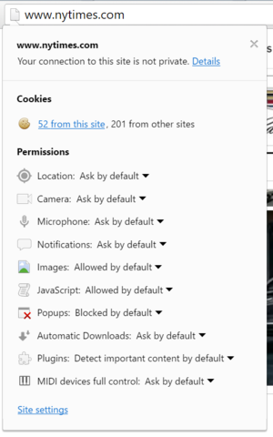
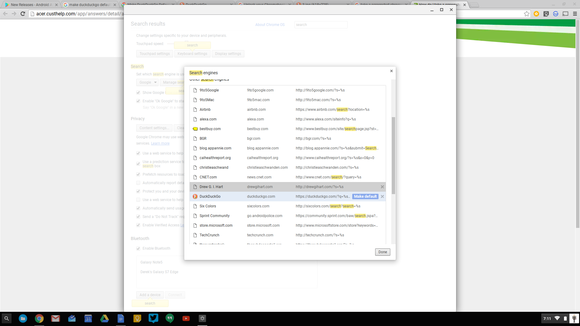

Chrome OS is a proprietary operating system developed by Google for Chromebook. Developed since 2009, it is based on the foundations laid by the Chrome web browser and on Linux3,4,5. Unlike the open source project associated with it, Chromium OS,Chrome OS can only be installed on machines built by Google and its partners (Chromebooks). The latter bases its principles on the use of Google online services: the interface of the operating system is minimalist and the potential of the system is summed up in the use of an adapted version of Google Chrome accompanied by a media player and a file browser. Chrome OS competes directly with Microsoft's Windows operating systems.
Currently most operating systems support a variety of networking protocols, hardware, and applications for using them. This means that computers running dissimilar operating systems can participate in a common network for sharing resources such as computing, files, printers, and scanners using either wired or wireless connections. Networks can essentially allow a computer's operating system to access the resources of a remote computer to support the same functions as it could if those resources were connected directly to the local computer. This includes everything from simple communication, to using networked file systems or even sharing another computer's graphics or sound hardware. Some network services allow the resources of a computer to be accessed transparently, such as SSH which allows networked users direct access to a computer's command line interface. Client/server networking allows a program on a computer, called a client, to connect via a network to another computer, called a server. Servers offer (or host) various services to other network computers and users. These services are usually provided through ports or numbered access points beyond the server's IP address. Each port number is usually associated with a maximum of one running program, which is responsible for handling requests to that port. A daemon, being a user program, can in turn access the local hardware resources of that computer by passing requests to the operating system kernel. Many operating systems support one or more vendor-specific or open networking protocols as well, for example, SNA on IBM systems, DECnet on systems from Digital Equipment Corporation, and Microsoft-specific protocols (SMB) on Windows. Specific protocols for specific tasks may also be supported such as NFS for file access. Protocols like ESound, or esd can be easily extended over the network to provide sound from local applications, on a remote system's sound hardware. Set up networks for managed devices (Wi-Fi, Ethernet, VPN) To set up networks on your Chromebook, go here instead. As an administrator, you can configure the networks that managed mobile devices, Chrome OS devices, and Google meeting room hardware use for work or school. You can control Wi-Fi, Ethernet, and Virtual Private Network (VPN) access, and set up network certificates. When you add a network configuration, you can apply the same network settings for your entire organization, or enforce specific network settings for different organizational units. Supported device platforms for network configurations Network type Supported platforms Wi-Fi Android and iOS (requires advanced mobile management), Chrome OS devices (by user or device), Google meeting room hardware Ethernet Chrome OS devices (by user or device), Google meeting room hardware VPN Managed Chrome OS devices Important considerations for network configuration We recommend that you set up at least one Wi-Fi network for the top organizational unit in your organization and set it to Automatically connect. This setup ensures that devices can access a Wi-Fi network at the sign-in screen. If you leave the password field empty when you set up a network, users can set passwords on their devices. If you specify a password, it's enforced on devices and users can’t edit it. If you need to use static IP addresses on Chrome OS devices in your organization, you can use IP address reservation on your DHCP server. However, DHCP doesn't provide authentication. To track the identity of Chrome OS devices on the network, use a separate authentication mechanism. Open all | Close all Set up a network Before you begin: If you want to configure a network with a Certificate Authority, add a certificate before you configure the network. Add a Wi-Fi network configuration Add an Ethernet network configuration Use a third-party VPN app Add a VPN configuration Configure network credentials by policy Add and manage certificates Important considerations for certificates: On Chrome OS versions 61–72, certificates added to an organizational unit are available to both network settings and kiosk apps on devices. On earlier versions, certificates are only available to the network settings on a device. On Chrome OS version 73 and later, certificates added to an organizational unit are available to network settings, kiosk apps, and managed guest sessions on devices. Some configurations using PEAP, TLS, and TTLS need server-side certificates to ensure accessibility. To use certificates for an EAP Wi-Fi network, the device must be secured with a password, PIN, or pattern verification. Do not upload certificates containing private keys. You can add up to 50 certificates in each organizational unit. Safe searching If you deploy a proxy on your web traffic, it may be possible to configure your proxy to append safe=strict to all search requests sent to Google. This parameter enables strict SafeSearch for all searches, regardless of the setting on the Search Settings page. However, the parameter doesn’t work on searches that use SSL search. Learn how to prevent SSL searches from bypassing your content filters. Add or delete a certificate Before you begin: To apply the setting for certain users, put their accounts in an organizational unit. Sign in to your Google Admin console. Sign in using your administrator account (does not end in @gmail.com). From the Admin console Home page, go to Devices. On the left, click Networks. Requires having the Shared device settings administrator privilege. Click Certificates. To apply the setting to everyone, leave the top organizational unit selected. Otherwise, select a child organizational unit. To add a certificate: Click Add Certificate. Enter a name for the certificate. Click Upload, select the PEM file, and click Open. Select the platforms that the certificate is a Certificate Authority for. Click Add. To remove a certificate, go to the table of certificates, point to the row, and click Delete. Manage network configurations You can change or delete an existing VPN, Wi-Fi, or Ethernet network configuration. Sign in to your Google Admin console. Sign in using your administrator account (does not end in @gmail.com). From the Admin console Home page, go to Devices. On the left, click Networks. Requires having the Shared device settings administrator privilege. Select the organizational unit that the network is configured for. Click the type of network configuration you want to change or delete. The section contains a searchable table of the configurations for that type of network. In the Enabled On column, the configuration is enabled for platforms with blue icons and disabled for platforms with gray icons. You can also point to each icon to review its status. To edit an existing configuration, click the network, make your changes, and click Save. To remove a network configuration from an organizational unit, click Remove to the right of the network. This option is available only if the configuration was added directly to the organizational unit. To remove a network configuration that a child organizational unit inherited from the parent organizational unit, select the child organizational unit, open the configuration for editing, and uncheck all the platforms. The configuration still appears in the list, but it isn't applied to any devices in the child organizational unit. Click Save Changes.
A computer being secure depends on a number of technologies working properly. A modern operating system provides access to a number of resources, which are available to software running on the system, and to external devices like networks via the kernel.[38] The operating system must be capable of distinguishing between requests which should be allowed to be processed, and others which should not be processed. While some systems may simply distinguish between "privileged" and "non-privileged", systems commonly have a form of requester identity, such as a user name. To establish identity there may be a process of authentication. Often a username must be quoted, and each username may have a password. Other methods of authentication, such as magnetic cards or biometric data, might be used instead. In some cases, especially connections from the network, resources may be accessed with no authentication at all (such as reading files over a network share). Also covered by the concept of requester identity is authorization; the particular services and resources accessible by the requester once logged into a system are tied to either the requester's user account or to the variously configured groups of users to which the requester belongs. In addition to the allow or disallow model of security, a system with a high level of security also offers auditing options. These would allow tracking of requests for access to resources (such as, "who has been reading this file?"). Internal security, or security from an already running program is only possible if all possibly harmful requests must be carried out through interrupts to the operating system kernel. If programs can directly access hardware and resources, they cannot be secured. External security involves a request from outside the computer, such as a login at a connected console or some kind of network connection. External requests are often passed through device drivers to the operating system's kernel, where they can be passed onto applications, or carried out directly. Security of operating systems has long been a concern because of highly sensitive data held on computers, both of a commercial and military nature. The United States Government Department of Defense (DoD) created the Trusted Computer System Evaluation Criteria (TCSEC) which is a standard that sets basic requirements for assessing the effectiveness of security. This became of vital importance to operating system makers, because the TCSEC was used to evaluate, classify and select trusted operating systems being considered for the processing, storage and retrieval of sensitive or classified information. Network services include offerings such as file sharing, print services, email, web sites, and file transfer protocols (FTP), most of which can have compromised security. At the front line of security are hardware devices known as firewalls or intrusion detection/prevention systems. At the operating system level, there are a number of software firewalls available, as well as intrusion detection/prevention systems. Most modern operating systems include a software firewall, which is enabled by default. A software firewall can be configured to allow or deny network traffic to or from a service or application running on the operating system. Therefore, one can install and be running an insecure service, such as Telnet or FTP, and not have to be threatened by a security breach because the firewall would deny all traffic trying to connect to the service on that port. An alternative strategy, and the only sandbox strategy available in systems that do not meet the Popek and Goldberg virtualization requirements, is where the operating system is not running user programs as native code, but instead either emulates a processor or provides a host for a p-code based system such as Java. Internal security is especially relevant for multi-user systems; it allows each user of the system to have private files that the other users cannot tamper with or read. Internal security is also vital if auditing is to be of any use, since a program can potentially bypass the operating system, inclusive of bypassing auditing. A Chromebook is already an ultra-secure computer straight out of the box. Because it doesn’t run a traditional operating system and takes advantage of various Google-powered security measures, Chrome OS is well-guarded against the evils lurking out there on the web. But you can always do more, particularly if you want to minimize traces of your Internet wanderings, or prevent your every online action from contributing to an advertising profile. You may share a Chromebook with others or desire a setup that’s impervious to the latest security threats. Perhaps it’s time for a little de-Googling in your life, as the Mountain View giant can collect a lot of information about you. [ Further reading: The best antivirus for Windows PCs ] Whatever your reasons, here are some ways to fortify your Chromebook’s security structure. Own your Google security Chrome OS benefits from Google’s ongoing security efforts to identify malicious websites and sandbox each browser tab so one site can’t take down your whole computer. Good security starts with you and how you manage your own data. In this case, it means ensuring that you’ve properly secured your own Google account. Because it’s the major gate to your Chromebook, you should have a solid password and use Google’s two-factor authentication. This generates a text message or a code through the Google Authenticator app that is required for any new login. In your Chromebook settings, you can tweak a number of different features. For maximum security, restrict sign-in to just your account (below). accountsIDG Your Chromebook gives you complete control over who can be granted access. This means no one else can sign in and use your Chromebook. Nosy relatives or miscreant youth will be denied at every turn. If others are determined to use your Chromebook, you can at least assert a little more control. Create a supervised profile that lets you see which websites have been visited by other profiles, block extensions, and change other settings. To do this, go to Settings > Manage other users > Enable supervised users. Furthermore, if you’re going to loan your Chromebook to someone else or plan to resell it, there’s a very easy method to wipe off your data. Use the Powerwash feature in Settings > Show Advanced Settings > Powerwash. Leave no trace You’ve probably had the experience of checking out, say, a new tent on Amazon, and then suddenly ads for that sleeping shelter appear on every site you visit. You can stop the madness. Consider a VPN if you want to mask your browsing from your internet service provider or other prying eyes. TunnelBear is an excellent option for the Chromebook for a couple of reasons. First, TunnelBear offers a Chrome extension, whereas many other VPNs require a client for Windows or macOS. Additionally, Chromebooks with the Google Play Store can install the TunnelBear Android app. tunnelbearDerek Walter/IDG TunnelBear is an excellent and easy-to-use VPN. Another avenue to explore is a privacy-focused extension like Privacy Badger, an extension from the Electronic Frontier Foundation. The extension blocks trackers, though you’re able to accept some cookies or whitelist specific sites. From time to time I’ve found that it can make a site’s performance a little wonky, so expect to hit a few bumps on the road. chrome cookiesChrome will give you the goods on cookies and other permissions requested by each site you visit. Another helpful extension from the EFF privacy advocates is HTTPS Everywhere. Once you install this to Chrome, the browser will force a secure connection to all the sites you visit on the Web. Even though Google and others have made a huge push to make HTTPS the default connection, nonsecure sites persist. Also, keep a careful eye on your extensions. Google has been busy recently ramping up the security it does in vetting the extensions you can install in Chrome. However, it’s best to stick to extensions from reputable companies. Check the reviews in the Chrome Web Store as well to see what others have to say. Back off on the Google Maybe you want to give Google a little less information to go on about you (all those details can lead to some interesting results). One solution is to switch your default search provider to DuckDuckGo. It’s a privacy-focused search engine that doesn’t track your search history. duckduckgo DuckDuckGo is a search engine focused on privacy.  To do this, go to DuckDuckGo, right-click in the address bar, and select Edit Search Engines. Then from the list of search engines, click the Make default button next to DuckDuckGo. Now when you type a search query in Chrome, it will be powered by the quacky search engine that keeps your secrets safe. Chrome’s Guest Mode enables you to browse with Chrome without attaching any of the history to your Google account. All you need to do is sign out of your current session and log in as a guest. It’s perfect for when you don’t want your browsing history to follow you around for all time. Going darker You can further minimize Google’s hold on your personal information by turning off autofill and automatic sync in Chrome. While the autofill feature is definitely convenient, you may not want to have this feature ready to put in your name, address, email, and more in online form. Killing off sync means your search history and other preferences will remain local to that machine. Go to Settings > Advanced Sync Settings and uncheck the Autofill box. If you like the convenience of synced data and passwords, but just don’t want to give it to Google, consider a password manager. sync settings Manage your sync settings to keep tabs on your past Internet usage. To go deep into the privacy woods, you can switch up your DNS server to a provider that won’t log or retain these lookups. By default, your administrator or Internet service provider may retain this information. To change the DNS settings on your Chromebook, first head to the the Chrome menu, choose Settings > Internet Connection , then click your network name. Then head to the Network tab and choose Custom name servers. You can enter in the following details from DNS Watch, which advocates for data privacy. Enter 84.200.69.80 for server 1, and 84.200.70.40 for server 2. Choose Disconnect. Then, select the network again and choose Connect. This will change the switchboard from sending your traffic through your ISP. While your Chromebook is already about as secure a computer as you can get, it can’t hurt to go the extra mile. with a few strategic moves, your Chromebook will be impervious to the wild woods of the web. Note: When you purchase something after clicking links in our articles, we may earn a small commission. Read our affiliate link policy for more details. 